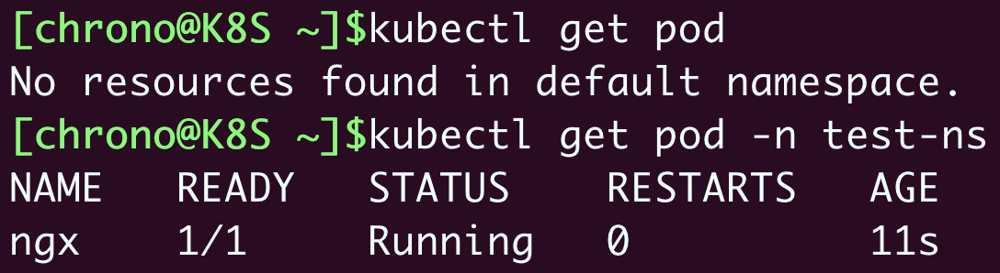
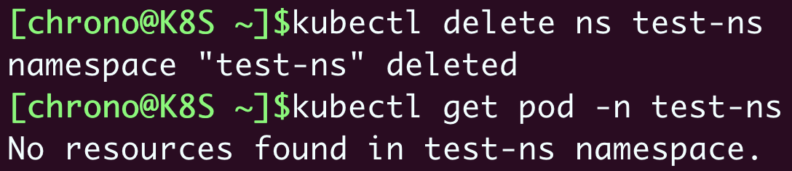
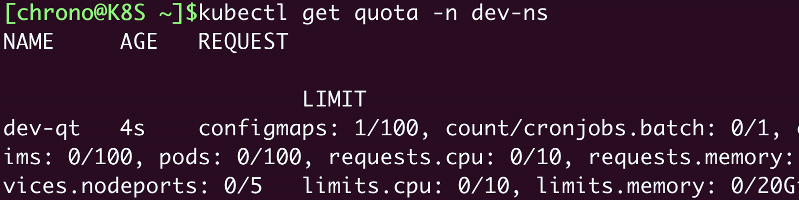
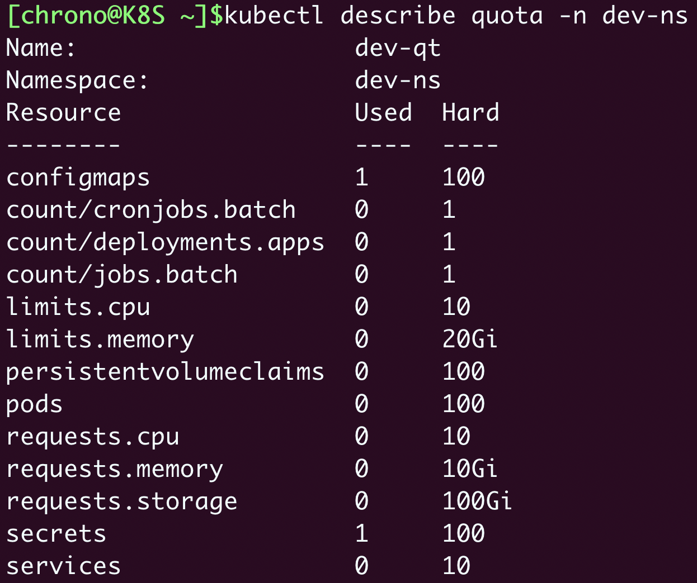
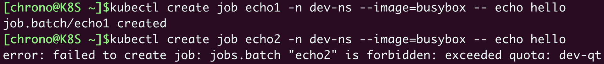
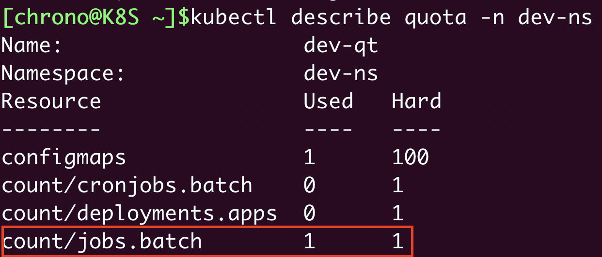
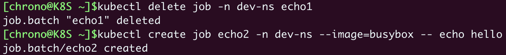
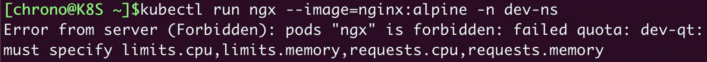
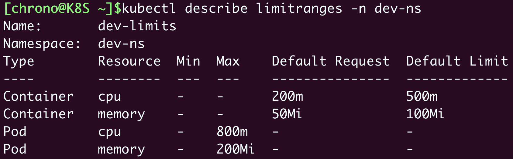
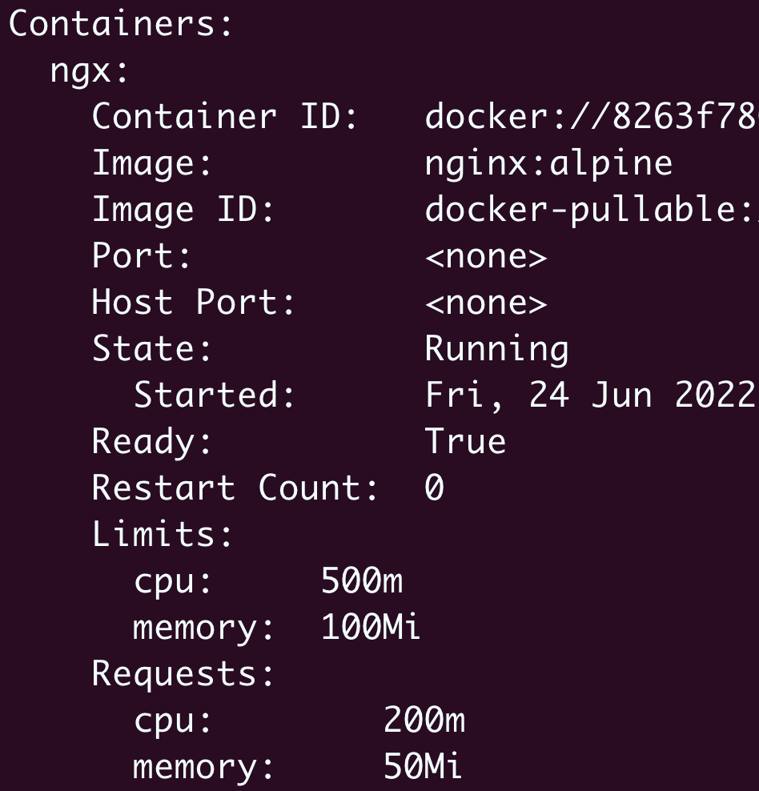

- 00 开篇词 迎难而上，做云原生时代的弄潮儿.md.html
- 00 课前准备 动手实践才是最好的学习方式.md.html
- 01 初识容器：万事开头难.md.html
- 02 被隔离的进程：一起来看看容器的本质.md.html
- 03 容器化的应用：会了这些你就是Docker高手.md.html
- 04 创建容器镜像：如何编写正确、高效的Dockerfile.md.html
- 05 镜像仓库：该怎样用好Docker Hub这个宝藏.md.html
- 06 打破次元壁：容器该如何与外界互联互通.md.html
- 07 实战演练：玩转Docker.md.html
- 08 视频：入门篇实操总结.md.html
- 09 走近云原生：如何在本机搭建小巧完备的Kubernetes环境.md.html
- 10 自动化的运维管理：探究Kubernetes工作机制的奥秘.md.html
- 11 YAML：Kubernetes世界里的通用语.md.html
- 12 Pod：如何理解这个Kubernetes里最核心的概念？.md.html
- 13 Job_CronJob：为什么不直接用Pod来处理业务？.md.html
- 14 ConfigMap_Secret：怎样配置、定制我的应用.md.html
- 15 实战演练：玩转Kubernetes（1）.md.html
- 16 视频：初级篇实操总结.md.html
- 17 更真实的云原生：实际搭建多节点的Kubernetes集群.md.html
- 18 Deployment：让应用永不宕机.md.html
- 19 Daemonset：忠实可靠的看门狗.md.html
- 20 Service：微服务架构的应对之道.md.html
- 21 Ingress：集群进出流量的总管.md.html
- 22 实战演练：玩转Kubernetes（2）.md.html
- 23 视频：中级篇实操总结.md.html
- 24 PersistentVolume：怎么解决数据持久化的难题？.md.html
- 25 PersistentVolume + NFS：怎么使用网络共享存储？.md.html
- 26 StatefulSet：怎么管理有状态的应用？.md.html
- 27 滚动更新：如何做到平滑的应用升级降级？.md.html
- 28 应用保障：如何让Pod运行得更健康？.md.html
- 29 集群管理：如何用名字空间分隔系统资源？.md.html
- 30 系统监控：如何使用Metrics Server和Prometheus？.md.html
- 31 网络通信：CNI是怎么回事？又是怎么工作的？.md.html
- 32 实战演练：玩转Kubernetes（3）.md.html
- 33 视频：高级篇实操总结.md.html
- 加餐 docker-compose：单机环境下的容器编排工具.md.html
- 加餐 谈谈Kong Ingress Controller.md.html
- 结束语 是终点，更是起点.md.html
- 捐赠
29 集群管理：如何用名字空间分隔系统资源？
你好，我是Chrono。
在上一节课里我们学习了资源配额和检查探针，它们可以保障Pod这个微观单位很好地运行。那么很自然地，我们就会想：在集群的宏观层次，会不会也有类似的方法来为Kubernetes提供运行保障呢？
这是毫无疑问的，因为Kubernetes在各个方面都考虑得非常周密，也有很多的手段来管理、控制集群的资源。
今天我们就来看看名字空间（namespace）的一些高级用法。
为什么要有名字空间
其实我们很早就接触过Kubernetes的名字空间，比如[第10讲]中查看apiserver等组件要用到 kube-system 名字空间，还有在[第20讲]里的Service对象，DNS的完整域名里也会用到名字空间。
不过之前学习的重点是Kubernetes架构和API对象，对名字空间没有特别关注，而且也过去比较久了，所以现在我们来重新认识一下名字空间。
首先要明白，Kubernetes的名字空间并不是一个实体对象，只是一个逻辑上的概念。它可以把集群切分成一个个彼此独立的区域，然后我们把对象放到这些区域里，就实现了类似容器技术里namespace的隔离效果，应用只能在自己的名字空间里分配资源和运行，不会干扰到其他名字空间里的应用。
你可能要问了：Kubernetes的Master/Node架构已经能很好地管理集群，为什么还要引入名字空间这个东西呢？它的实际意义是什么呢？
我觉得，这恰恰是Kubernetes面对大规模集群、海量节点时的一种现实考虑。因为集群很大、计算资源充足，会有非常多的用户在Kubernetes里创建各式各样的应用，可能会有百万数量级别的Pod，这就使得资源争抢和命名冲突的概率大大增加了，情形和单机Linux系统里是非常相似的。
比如说，现在有一个Kubernetes集群，前端组、后端组、测试组都在使用它。这个时候就很容易命名冲突，比如后端组先创建了一个Pod叫“Web”，这个名字就被“占用”了，之后前端组和测试组就只能绞尽脑汁再新起一个不冲突的名字。接着资源争抢也容易出现，比如某一天，测试组不小心部署了有Bug的应用，在节点上把资源都给“吃”完了，就会导致其他组的同事根本无法工作。
所以，当多团队、多项目共用Kubernetes的时候，为了避免这些问题的出现，我们就需要把集群给适当地“局部化”，为每一类用户创建出只属于它自己的“工作空间”。
如果把Kubernetes比做一个大牧场的话，API对象就是里面的鸡鸭牛羊，而名字空间就是圈养它们的围栏，有了各自合适的活动区域，就能更有效、更安全地利用Kubernetes。
如何使用名字空间
名字空间也是一种API对象，使用命令 kubectl api-resources 可以看到它的简称是“ns”，命令 kubectl create 不需要额外的参数，可以很容易地创建一个名字空间，比如：
kubectl create ns test-ns
kubectl get ns
Kubernetes初始化集群的时候也会预设4个名字空间：default、kube-system、kube-public、kube-node-lease。我们常用的是前两个，default 是用户对象默认的名字空间，kube-system 是系统组件所在的名字空间，相信你对它们已经很熟悉了。
想要把一个对象放入特定的名字空间，需要在它的 metadata 里添加一个 namespace 字段，比如我们要在“test-ns”里创建一个简单的Nginx Pod，就要这样写：
apiVersion: v1
kind: Pod
metadata:
name: ngx
namespace: test-ns
spec:
containers:
- image: nginx:alpine
name: ngx
kubectl apply 创建这个对象之后，我们直接用 kubectl get 是看不到它的，因为默认查看的是“default”名字空间，想要操作其他名字空间的对象必须要用 -n 参数明确指定：
kubectl get pod -n test-ns

因为名字空间里的对象都从属于名字空间，所以在删除名字空间的时候一定要小心，一旦名字空间被删除，它里面的所有对象也都会消失。
你可以执行一下 kubectl delete，试着删除刚才创建的名字空间“test-ns”：
kubectl delete ns test-ns

就会发现删除名字空间后，它里面的Pod也会无影无踪了。
什么是资源配额
有了名字空间，我们就可以像管理容器一样，给名字空间设定配额，把整个集群的计算资源分割成不同的大小，按需分配给团队或项目使用。
不过集群和单机不一样，除了限制最基本的CPU和内存，还必须限制各种对象的数量，否则对象之间也会互相挤占资源。
名字空间的资源配额需要使用一个专门的API对象，叫做 ResourceQuota，简称是 quota，我们可以使用命令 kubectl create 创建一个它的样板文件：
export out="--dry-run=client -o yaml"
kubectl create quota dev-qt $out
因为资源配额对象必须依附在某个名字空间上，所以在它的 metadata 字段里必须明确写出 namespace（否则就会应用到default名字空间）。
下面我们先创建一个名字空间“dev-ns”，再创建一个资源配额对象“dev-qt”：
apiVersion: v1
kind: Namespace
metadata:
name: dev-ns
---
apiVersion: v1
kind: ResourceQuota
metadata:
name: dev-qt
namespace: dev-ns
spec:
... ...
ResourceQuota对象的使用方式比较灵活，既可以限制整个名字空间的配额，也可以只限制某些类型的对象（使用scopeSelector），今天我们看第一种，它需要在 spec 里使用 hard 字段，意思就是“硬性全局限制”。
在ResourceQuota里可以设置各类资源配额，字段非常多，我简单地归了一下类，你可以课后再去官方文档上查找详细信息：
- CPU和内存配额，使用
request.*、limits.*，这是和容器资源限制是一样的。 - 存储容量配额，使
requests.storage限制的是PVC的存储总量，也可以用persistentvolumeclaims限制PVC的个数。 - 核心对象配额，使用对象的名字（英语复数形式），比如
pods、configmaps、secrets、services。 - 其他API对象配额，使用
count/name.group的形式，比如count/jobs.batch、count/deployments.apps。
下面的这个YAML就是一个比较完整的资源配额对象：
apiVersion: v1
kind: ResourceQuota
metadata:
name: dev-qt
namespace: dev-ns
spec:
hard:
requests.cpu: 10
requests.memory: 10Gi
limits.cpu: 10
limits.memory: 20Gi
requests.storage: 100Gi
persistentvolumeclaims: 100
pods: 100
configmaps: 100
secrets: 100
services: 10
count/jobs.batch: 1
count/cronjobs.batch: 1
count/deployments.apps: 1
我来稍微解释一下它为名字空间加上的全局资源配额：
- 所有Pod的需求总量最多是10个CPU和10GB的内存，上限总量是10个CPU和20GB的内存。
- 只能创建100个PVC对象，使用100GB的持久化存储空间。
- 只能创建100个Pod，100个ConfigMap，100个Secret，10个Service。
- 只能创建1个Job，1个CronJob，1个Deployment。
这个YAML文件比较大，字段比较多，如果你觉得不是太容易阅读的话，也可以把它拆成几个小的YAML，分类限制资源数量，也许会更灵活一些。比如：
apiVersion: v1
kind: ResourceQuota
metadata:
name: cpu-mem-qt
namespace: dev-ns
spec:
hard:
requests.cpu: 10
requests.memory: 10Gi
limits.cpu: 10
limits.memory: 20Gi
apiVersion: v1
kind: ResourceQuota
metadata:
name: core-obj-qt
namespace: dev-ns
spec:
hard:
pods: 100
configmaps: 100
secrets: 100
services: 10
如何使用资源配额
现在让我们用 kubectl apply 创建这个资源配额对象，然后用 kubectl get 查看，记得要用 -n 指定名字空间：
kubectl apply -f quota-ns.yml
kubectl get quota -n dev-ns

你可以看到输出了ResourceQuota的全部信息，但都挤在了一起，看起来很困难，这时可以再用命令 kubectl describe 来查看对象，它会给出一个清晰的表格：
kubectl describe quota -n dev-ns

现在让我们尝试在这个名字空间里运行两个busybox Job，同样要加上 -n 参数：
kubectl create job echo1 -n dev-ns --image=busybox -- echo hello
kubectl create job echo2 -n dev-ns --image=busybox -- echo hello

ResourceQuota限制了名字空间里最多只能有一个Job，所以创建第二个Job对象时会失败，提示超出了资源配额。
再用命令 kubectl describe 来查看，也会发现Job资源已经到达了上限：

不过，只要我们删除刚才的Job，就又可以运行一个新的离线业务了：

同样的，这个“dev-ns”里也只能创建一个CronJob和一个Deployment，你可以课后自己尝试一下。
默认资源配额
学到这里估计你也发现了，在名字空间加上了资源配额限制之后，它会有一个合理但比较“烦人”的约束：要求所有在里面运行的Pod都必须用字段 resources 声明资源需求，否则就无法创建。
比如说，现在我们想用命令 kubectl run 创建一个Pod：
kubectl run ngx --image=nginx:alpine -n dev-ns

发现给出了一个“Forbidden”的错误提示，说不满足配额要求。
Kubernetes这样做的原因也很好理解，上一讲里我们说过，如果Pod里没有 resources 字段，就可以无限制地使用CPU和内存，这显然与名字空间的资源配额相冲突。为了保证名字空间的资源总量可管可控，Kubernetes就只能拒绝创建这样的Pod了。
这个约束对于集群管理来说是好事，但对于普通用户来说却带来了一点麻烦，本来YAML文件就已经够大够复杂的了，现在还要再增加几个字段，再费心估算它的资源配额。如果有很多小应用、临时Pod要运行的话，这样做的人力成本就比较高，不是太划算。
那么能不能让Kubernetes自动为Pod加上资源限制呢？也就是说给个默认值，这样就可以省去反复设置配额的烦心事。
这个时候就要用到一个很小但很有用的辅助对象了—— LimitRange，简称是 limits，它能为API对象添加默认的资源配额限制。
你可以用命令 kubectl explain limits 来查看它的YAML字段详细说明，这里说几个要点：
spec.limits是它的核心属性，描述了默认的资源限制。type是要限制的对象类型，可以是Container、Pod、PersistentVolumeClaim。default是默认的资源上限，对应容器里的resources.limits，只适用于Container。defaultRequest默认申请的资源，对应容器里的resources.requests，同样也只适用于Container。max、min是对象能使用的资源的最大最小值。
这个YAML就示范了一个LimitRange对象：
apiVersion: v1
kind: LimitRange
metadata:
name: dev-limits
namespace: dev-ns
spec:
limits:
- type: Container
defaultRequest:
cpu: 200m
memory: 50Mi
default:
cpu: 500m
memory: 100Mi
- type: Pod
max:
cpu: 800m
memory: 200Mi
它设置了每个容器默认申请0.2的CPU和50MB内存，容器的资源上限是0.5的CPU和100MB内存，每个Pod的最大使用量是0.8的CPU和200MB内存。
使用 kubectl apply 创建LimitRange之后，再用 kubectl describe 就可以看到它的状态：
kubectl describe limitranges -n dev-ns

现在我们就可以不用编写 resources 字段直接创建Pod了，再运行之前的 kubectl run 命令：
kubectl run ngx --image=nginx:alpine -n dev-ns
有了这个默认的资源配额作为“保底”，这次就没有报错，Pod顺利创建成功，用 kubectl describe 查看Pod的状态，也可以看到LimitRange为它自动加上的资源配额：

小结
今天我们学习了如何使用名字空间来管理Kubernetes集群资源。
在我们的实验环境里，因为只有一个用户（也就是你自己），可以独占全部资源，所以使用名字空间的意义不大。
但是在生产环境里会有很多用户共同使用Kubernetes，必然会有对资源的竞争，为了公平起见，避免某些用户过度消耗资源，就非常有必要用名字空间做好集群的资源规划了。
再简单小结一下今天的内容：
- 名字空间是一个逻辑概念，没有实体，它的目标是为资源和对象划分出一个逻辑边界，避免冲突。
- ResourceQuota对象可以为名字空间添加资源配额，限制全局的CPU、内存和API对象数量。
- LimitRange对象可以为容器或者Pod添加默认的资源配额，简化对象的创建工作。
课下作业
最后是课下作业时间，给你留两个思考题：
- 如果你是Kubernetes系统管理员，你会如何使用名字空间来管理生产集群呢？
- 你觉得设置资源配额应该遵循什么样的基本原则？
在最后这段一起学习的旅途中，期待在留言区看到你的思考，如果觉得今天的内容对你有帮助，也欢迎分享给身边的朋友一起讨论。我们下节课再见。

© 2019 - 2023 Liangliang Lee. Powered by gin and hexo-theme-book.